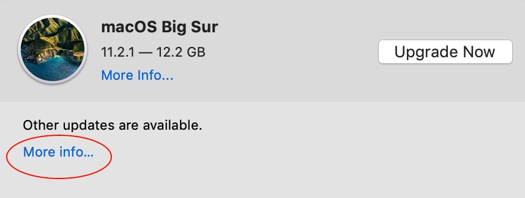

|
|
Should you UPDATE or UPGRADE your Mac?Recently some customers have experienced downtime and data loss due to Big Sur upgrades, so I wanted to address some important topics:
What's the difference between updates and upgrades?Updates make minor changes to fix bugs and improve security. Upgrades make major changes to add features and functionality. Since upgrades make major changes, they're more likely to break existing hardware or software. To avoid disruption and data loss, it's important to backup and check compatibility before upgrading. When Apple Software Update runs, it may present the macOS Catalina or Big Sur upgrade rather than updates. To avoid unintentionally installing an upgrade, click "More info..." below "Other updates are available" to install Apple software updates.

If you haven't been prompted to upgrade to Catalina or Big Sur, your Mac may be running macOS 10.13 or earlier, which no longer receive security updates. (To check the version, select Apple menu->About This Mac.) Upgrading to macOS 10.14.6 Mojave or higher will allow continued security updates. Should you upgrade to Big Sur?Before upgrading, it's important to check compatibility to make sure the software and hardware you currently use will work with Big Sur, and make a backup to preserve a path of retreat. Older, 32-bit apps won't run on Big Sur and we've also seen problems with some antivirus software, Adobe apps and font managers. Should you buy an M1 Mac?Apple's newest MacBook Air, MacBook Pro 13" and Mac Mini models use Apple M1-based, rather than Intel-based hardware. Compatibility with existing software is very good, but not 100%. M1-based Macs require Big Sur, so some hardware and software may not work for that reason as well. M1-based or Apple Silicon Macs are the future, and Apple has made changes like this before, but it's important to check compatibility to make sure that your new Mac can do what you need before investing in one. Should you install the latest updates?Since updates fix bugs and improve security, it's generally a good idea to update unless you're prompted to install an upgrade. In the rare case that an update breaks something, we can restore from backup. If you're a subscriber to our patch management service, the most important updates are already being taken care of for you. Is there a way to make all of this easier?
Please contact us to get started. |